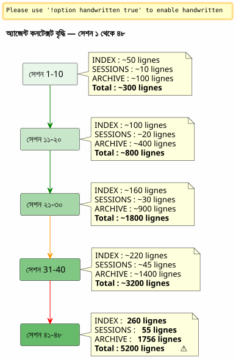

Sliding Window এবং ঠাণ্ডা তরঙ্গ : যখন এজেন্ট কনটেক্সট বিস্ফোরিত হয় এবং এর সংরক্ষণ করতে হয় কোনো ক্ষতি না
Publié le 26 April 2026
সারাংশ
একটি প্রকল্পে 48 সেশন এবং মোটে 150+ পর্যন্ত, আমি যত্নে নির্মিত Eager/Lazy শাসন তত্ত্ব দৃঢ়ভাবে বাঁধে উঠল। এজেন্ট ফাইলগুলি, যাকে হালকা হওয়া উচিত, মোটে ৫২০০ লাইনের ওজন বদল দিল। স্বয়ংচালিতভাবে লোড হওয়া কনটেক্স্ত আমার নিয়ন্ত্রণক্ষমতার চেয়ে দ্রুত বাড়ত। এই নিবন্ধে বলা হয়েছে যে আমি কিভাবে একটি বেকআপ মেকানিজম ধারণা করি — স্লাইন্ডিং উইন্ডো এবং সমান শীতল লহারের মধ্যে — যাতে এক্টিভ কনটেক্স্ত হালকা রাখা যায় এবং কখনো কщих না হারিয়ে যাওয়া হয়।
সিগনাল : 5200 লাইন
আমি সেশন ০৪৮-এর মাঝখানে আছি পর`magic-stick`, আমার লাইভ্স Linux ISO তৈরি করার প্রকল্প। Opencode আমাকে দেখছে। সব সময়ের মতো, এটি স্বয়ংক্রিয়ভাবে আমার Eager ফাইলগুলি সেশনের শুরুতে লোড করেছে —AGENT.adoc, PROMPT_REPRISE.adoc, .agents/INDEX.adoc. কোন অসাভাবিক নেই।
কিন্তু কোনো জিনিস ভুলে গেছে। উত্তরগুলো ধীর হয়ে গেছে। যুক্তি দিলুত হয়েছে। এজেন্টটি দুটি বার্তা আগে দেখていた বিবরণগুলো ভুলে যাচ্ছে।
আমি একটি টার্মিনাল খুলি এবং টাইপ করি:
wc -l .agents/INDEX.adoc .agents/SESSIONS_HISTORY.adoc \
.agents/archives/COMPLETED_TASKS_ARCHIVE_2026-04.adoc260 লাইন INDEX-এর জন্য। 55 SESSIONS_HISTORY-এর জন্য।1756 COMPLETED_TASKS_ARCHIVE এর জন্য.
ফাইল`sessions/`এছাড়াও ~3200 লাইন যোগ করে। মোট :5200 লাইনপ্রসঙ্গ যারা লোড হচ্ছে, কেনেকোনোভাবে, অজেন্টের তৎক্ষণিক মוחে
আমি পূর্বের নিবন্ধে তত্ত্বগত করেছি Eager/Lazy কৌশলটি কাজ করছে — কিন্তু এর একটি জন্মজত দুর্বলতা আছে যা আমি পূর্বে আশা করেনি: এতে নেইবয়স বাড়ারের মেকানিজাম না. প্রতিটি সেশন এক লাইন যোগ করে INDEX‑এ, একটি অনুচ্ছেদ যোগ করে COMPLETED_TASKS‑এ, এবং sessions/‑এ একটি ফাইল। কখনো কিছু বের হয় না। প্রেক্ষापট হল একটি বফল বরফের গোল, যা প্রতিটি নতুন সেশনের সাথে বৃদ্ধি পায়।

এটি একটি বাগ নয়; এটি সেশন শেষ প্রক্রিয়ার সরাসরি ফলাফল, যা প্রতিটি বিবরণকে মেটিকুলিভাবে সংরক্ষণ করে। সিস্টেম নিজের সাফল্যের শিকার।
ডায়াগনস্টিক : ট্রিপল রিডান্ড্যান্স
আমি এজেন্টকে সমস্যা নিরুপণ করার জন্য অনুরোধ করি। তার প্রতিক্রিয়া তৎক্ষণিক এবং সঠিক।
ফাইল |
রেখাগুলি |
ভুমিকা |
সমস্যা |
|
260+ |
EAGER (স্বয়ংচালিত) |
001 থেকে সব সেশনের টেবিল —+1 লাইন প্রতি সেশন |
|
55 |
উৎসাহী |
সারসংক্ষেপী টেবিল —INDEX সঙ্গে অতি পুনরাবৃত্তি |
|
1756 |
উত্সাহিত (অব্যাক্ত) |
অপ্রিলের সমস্ত সেশনের সম্পূর্ণ বিবরণ |
|
(empty) |
LAZY (অনুমানিত) |
ব্যক্তিগত আর্কাইভ, কিন্তুব্য�্যবহৃত হয়নিকারণ সবকিছু ইতিমধ্যে COMPLETED_TASKS-এ আছে |
এজেন্ট চারটি মূল কারণ চিহ্নিত করা:
-
COMPLETED_TASKS_ARCHIVE সব东西 শোষণ করে— আর্কাইভগুলোকে নির্দেশ করার পরিবর্তে`.sessions/`, তিনি প্রতিটি সেশনকে সম্পূর্ণরূপে কপি করে নেন।
-
INDEX.adoc` একটি সম্পূর্ণ ইতিহাসের ভূমিকা পালন করে— টেবিল "Sessions Récentes" ৩০+ এন্ট্রি আছে।
-
SESSIONS_HISTORY.adoc অতিরিক্ত— INDEX‑এ একই তথ্য, কিন্তু বিন্যাসটি ভিন্ন।
-
LAZY নিয়মটি মেনে নেওয়া হয়নি— COMPLETED_TASKS অনুমানিত EAGER কারণ এটি সব ধারণ করে।
তার প্রস্তাবটি র্যাডিকাল: INDEX কে ১০ সেশনে সীমাবদ্ধ করা, COMPLETED_TASKS খালি করা, SESSIONS_HISTORYকে pure LAZY-এ স্থানান্তর করা। তৎক্ষণীয় লাভ :~1900 লাইন সংরক্ষিত.
এটা পরিষ্কার, কার্যকর, যুক্তি-বাচক। কিন্তু আমার এই পদ্ধতির সাথে একটি সমস্যা আছে।
কেন আমি স্পষ্ট সমাধানটি প্রত্যাখ্যান করেছি?
এজেন্টের সমাধান হলো একটি ইঞ্জিনিয়ারের যিনি একটি ক্যাশ অপ্টিমাইজ করেন। সীমাবদ্ধ করুন। কাটে দিন। অপ্রয়োজনীয় পুনরাবৃত্তি সরিয়ে ফেলুন।
কিন্তু এই "বাজিমাত"গুলো বাজিমাত নয়। প্রতিটি শাসন ফাইল একটিবিভিন্ন কোণএকই বাস্তবে:
-
INDEX= দৃষ্টি ম্যাক্রো, একজিকিউটিভ ড্যাশবোর্ড
-
SESSIONS_HISTORY= রৈখিক কালক্রমবদ্ধ টেবিল, স্কোর করা
-
COMPLETED_TASKS_ARCHIVE= বিস্তারিত কাহিনি মেট্রিক্স সহ
-
sessions/.adoc* = ব্যক্তিগত আর্কাইভ, সম্পূর্ণ প্রসঙ্গ
এটি বোকা ডুপ্লিকেশন নয়। এটি এরবহু গঠিত দৃষ্টিভঙ্গি. এটি distillation‑এর প্রয়োজনীয়তা—যাতে ভবিষ্যে একজন মানুষ (বা ভালোভাবে প্রশিক্ষিত একটি ভবिष্যৎ LLM) কোণগুলোকে সমন্বয় করে প্যাটার্নগুলো.extract করতে পারে।
একটি ডেটা সায়েন্টিস্ট আপনাকে বলে: “৬ কলামের মধ্যে ৩টি কলাম সরিয়ে ফেলি, তারা সংযুক্ত।” আপনি তাকে কী উত্তর দেন? করেলেশনটি রিডান্ডেন্সি নয়, যখন প্রতিটি কলাম একই ঘটনার ভিন্ন একটি ধারণ ধারণ করে। এই মাত্রিক সমৃদ্ধিই ডেটাসেটকে ব্যবহারযোগ্য করে তোলে।
এটি আমার বোধ। এবং আমি এটিকে এজেন্টের শীতল যৌক্তিকতার বিরুদ্ধে রক্ষা করি।
__ আমার ধারণায় কোনো নীরব মিশ্রণ নেই। সবকিছু ফেলে দেওয়া হয় না; বরং, সেশন শেষ হওয়ার প্রক্রিয়ার সনকাঠিত ফলাফলকে সরানো হয় — প্রতিটি ফাইল তার কোণ এবং সত্যিই একটি উন্নয়নের আকারে থাকা পুনরাবৃত্তি সহ। এই বহুমাত্রিক উপকরণই distillation‑এর জন্য ভালো হবে। (empty)
এজেন্ট আঘাত খায়। এবং নিজেকে সংশোধন করে।
প্রস্তাব : একই শীতল তোফান
এজেন্টটি তারপর একটি আরও সূক্ষ্ম প্রক্রিয়া প্রস্তাব করে, যা আমার সমৃদ্ধ ডেটাসেটের অনুভূতিকে সম্মান করে এবং একই সাথে পরিসরের বিস্ফোরক সমস্যাটির টেকনিক্যাল দিকটিও সমাধান করে।
সিদ্ধান্তটি সরল এবং প্যাটার্ন থেকে সরাসরি অনুপ্রাণিতগরম/মধ্যম/ঠাণ্ডা স্টোরেজআর্কাইভ ব্যাবস্থাপনে প্রয়োগ করা :
-
গরম (আগ্রহী)= শেষ ১০ সেশন INDEX, PROMPT_REPRISE-তে (N+1) নম্বর সেশনের, শেষ ২টি সেশন ফাইল
-
গরম (LAZY)= SESSIONS_HISTORY সাম্প্রতিক, SCRIPT_VERIFICATION, সমস্ত রেফারেন্স ডকুমেন্টেশন
-
Cold (backup/)= বাকি সব, স্থানান্তরিতঅক্ষুণ্ণ, রূপান্তর ছাড়াই, পুন: ইন্ডেক্সিং ছাড়αι
----
----
.agents/
├── INDEX.adoc → Sessions N-9 à N (10 dernières)
├── SESSIONS_HISTORY.adoc → Sessions N-9 à N
├── SCRIPT_VERIFICATION.adoc → Dernière vérif (pas d'historique)
├── PROMPT_REPRISE.adoc → Session N+1 uniquement
├── sessions/ → Sessions N-1 à N uniquement
└── backup/
└── Y2026-sessions-001-039/ ← Vague froide, COPIE INTÉGRALE
├── INDEX.adoc → Sessions 001 à 039 (complet)
├── SESSIONS_HISTORY.adoc → Sessions 001 à 039 (complet)
├── COMPLETED_TASKS_ARCHIVE.adoc → Sessions 001 à 039 (complet)
└── sessions/ → 001.adoc, 002.adoc...
----
মেকানিজমের চাবি :**ব্যাকআপটি একটি কেন্দ্রীয় ইন্ডেক্স নয়, এটি গত লহরের একটি সঠিক অনুকরণ।**. 10টি সক্রিয় সেশনের সীমা অতিক্রম করলে, কюсьও মুছে না. কюсьও পুনঃ ইন্ডেক্স করা না. কюсьও মার্জ করা না. আমরা N-10 সেশনের মতো এজেন্ট ফাইলগুলোর প্যাকেট নেই. এবং আমরা এটা -এ স্থানান্তরিত করি`backup/`.
সক্রিয় ফাইলগুলো, তারা,截단 করা হয়েছে:
* INDEX : শুধুমাত্র 10টি সর্বশেষ লাইন (sliding window)
* SESSIONS_HISTORY : একই
* COMPLETED_TASKS_ARCHIVE : নতুন ফাইল বর্তমান সময়ের জন্য
* সেশন/ : শুধুমাত্র 2টি শেষের সেশন
[plantuml, format=svg, id=diag-hot-warm-cold, alt="Architecture Hot/Warm/Cold du contexte agent — EAGER/LAZY/backup"]
----
@startuml
skinparam backgroundColor #FEFEFE
skinparam defaultTextAlignment center
skinparam wrapWidth 200
title এজেন্ট কন্টেক্সটের হট / ওয়ার্ম / কোল্ড আর্কিটেকচার
package "HOT (EAGER)
স্বয়ংক্রিয়ভাবে শুল্কপ্রদত্ত
~300 লাইন" as HOT #FFCDD2 {
file "INDEX.adoc
(10 সেশন)" as IDX_HOT
file "PROMPT_REPRISE
(session N+1)" as PRO_HOT
file "AGENT.adoc
(নির্বদ্ধ নিয়ম)" as AG_HOT
}
package "WARM (LAZY)
অন-ডিম্যান্ডে লোড
~500 লাইন" as WARM #FFF9C4 {
file "SESSIONS_HISTORY
(10টি শেষ)" as HIS_WARM
file "SCRIPT_VERIFICATION
(শেষ)" as VER_WARM
file "PROCEDURES.adoc
(টেমপ্লেট)" as PRO_WARM
file "*_REFERENCE.adoc\n(প্রযুক্তিগত নথি)" as REF_WARM
}
package "COLD (backup/)
কখনো চার্জ করা হয়নি
শুধুমাত্র মানব পাঠ" as COLD #BBDEFB {
folder "Y2026-001-039/" as WAVE {
file "সম্পূর্ণ সূচী" as IDX_COLD
file "SESSIONS_HISTORY\n(সম্পূর্ণ)" as HIS_COLD
file "COMPLETED_TASKS\n(সম্পূর্ণ)" as ARCH_COLD
folder "সেশন/ (001-039)" as SESS_COLD
}
folder "Y2026-040-???\n(ভবিষ্যৎ)" as FUTURE
}
HOT --> WARM : "এজেন্ট উঠে যায়
যদি প্রয়োজন হয়"
WARM --> COLD : "কখনো স্বয়ংক্রিয় নয়
ব্যক্তি সেখানে একা যায়"
note bottom of COLD
Règle : COPIE INTÉGRALE
Pas de transformation
Pas de réindexation
Read-only après archivage
end note
@enduml
----
তাৎপর্যপূর্ণ lợiBisাল : EAGER প্রসঙ্গ থেকে যায়**~5200 লাইন থেকে ~300 লাইন**. ১৭ দিয়ে ভাগ। এককটি ঐতিহাসিক ডেটা লাইন হারাবেন না.
== এটি কেন একটি সমগ্র ব্যাগ নয়?
এজেন্ট, তার প্রথম পুনরাবৃত্তিতে, ভয় করত যে`backup/`ব্ল্যাকবক্স হোক — একটি ফোল্ডার যেখানে কেউ ফাইল ফেলে যা কখনো পড়বে না। এটি একটি বৈধ ভয়। কিন্তু এটি একটি ভুলধারণা উপর ভিত্তি করা।
একটি জামাবরুশ হলো কখনো ফাইল ফেলে দেওয়া**কোন গঠন নেই, কোন প্রথা নেই, কোন গোষ্ঠীকরণ যুক্তি নেই**. এইভাবে, ব্যাকআপটি সময়ের মোতাবেক (Y2026-001-039) গঠিত, এবং প্রতিটি ব্যাকআপ ফোল্ডার ধারণ করে**একই গঠন**যে ফাইল`.agents/`actif : INDEX, SESSIONS_HISTORY, COMPLETED_TASKS_ARCHIVE, sessions/.
এটি একটি জামা-জুড়ে নয়। এটা একটি**টাইমস্ট্যাম্প করা স্ন্যাপশট**.একটু আরও বলা যায় যে এটি একটি সরলীকৃত সংস্করণকরণ পদ্ধতি — একটি ব্যতিক্রম যে, এটি ফাইলগুলোকে স্বয়ংক্রিয়ভাবে সংস্করণ করে না, বরং শাসনের পুরো প্যাকেজকে একটি নির্দিষ্ট সময় T-এ সংস্করণ করে।
আপনি পুরনো একটি তথ্য খুঁজে বের করতে চান যখন, আপনাকে একটি কেন্দ্রীয় সূচীর দরকার নেই। আপনার দুটি বিকল্প আছে:
1. **grep` লক্ষ্যিত**:`grep -r "zsh" backup/Y2026-001-039/`— এবং আপনি সেই সময়ের zsh-er যেকোনো উল্লেখ খুঁজে পাবেন, যে কোনো কোণ থেকে না হোক (INDEX, SESSIONS_HISTORY, সেশন আর্কাইভ)।
2. **ম্যানুয়াল পুন:সংযোজন**: আপনি অস্থায়ীভাবে ব্যাকআপ ফোল্ডারটি সক্রিয় संदर्भে কপি করেন, এবং আপনি এজেন্টকে এই নির্দিষ্ট সময়কে বিশ্লেষণ করতে বলেন।
সূচি নিহিত। এটি ফাইলগুলো নিজের গঠনের মধ্যেই — প্রতিটি ইতিমধ্যে নিজেদের দৃষ্টিভঙ্গি থেকে একটি সূচি।
== শেলফের উপমা
যান্ত্রিকটি সহজবোঝ্য করতে, আমি এটি তিনটি শেলফ হিসাবে ধারণা
* **শেলফ ১ (EAGER)**— কাজের পরিকল্পনা. যা আমি দরকার *এখন*. হালনাগাদ INDEX, PROMPT_REPRISE, অব্যাহতি নিয়ম. হালকা, তৎক্ষণিক, গুরুত্বপূর্ণ.
* **শেলফ ২ (LAZY)**— পরামর্শ গ্রন্থাগার. আমি অনুরোধে খোঁজে পেতে পারি। প্রযুক্তিগত রেফারেন্স, সাম্প্রতিক ইতিহাস, প্রক্রিয়া। ব্যাপক, কিন্তু মেমোরি তে লোড করা হয়নি।
* **গুহা (backup/)**— ঠান্ডা আর্কাইভ। সেই সব যা অতীতে গিয়েছে, কিন্তু আমি ফেলে দিতে চাই না। এজেন্ট সেখানে কখনো প্রবেশ করে না। মানुष সেখানে নেমে যায় যখন তিনি দ্রবণ করতে চান।
প্রথমে এজেন্টটি একটি চতুর্থ শেলফ — একটি`index-backup.adoc`যেটি LAZY হত এবং সম্পূর্ণ ব্যাকআপের একটি বিষয়সূচি ধারণ করত। আমি প্রত্যাখ্যান করলাম। এটি একটি বর্ধিত পুনরাবৃত্তি হবে এমন একটি সিস্টেমে যা ইতিমধ্যে রেখাযবদ্ধ বৃদ্ধির কারণে কষ্টে আছে। আর্কাইভ করা ফাইলদের কাঠামো ইতিমধ্যে একটি সূচী।
== দুই ট্রিগার সেন্সর
অব ধারণা গঠন দৃঢ় ছিল, কিন্তু একটি অদৃশ্য বিন্দু বাকি ছিল :**সঠিকভাবে ঘূর্ণন কখন শুরু করা উচিত?**প্রারంభ নিবন্ধটি এটি একটি খোলা প্রশ্ন হিসেবে চিহ্নিত ছিল। দুইদিন পরে, উত্তরটি ছয় প্রকল্পের শাসন ফাইলগুলোতে কোড করা হয়েছে: দুটো ট্রিগার সহ সেন্সর।
=== অটোমেটিক ট্রিগার — `N % 10 == 0
প্রথম ট্রিগার গাণিতিক। যখন সেশনের সংখ্যা ১০ এর গুণিতক হয় — সেশন ১০, ২০, ৩০, ৪০ — ব্যাকাপ রোটেশন স্বয়ংক্রিয়ভাবে সেশনের শেষ প্রক্রিয়ার অংশে, ধাপ ৬-এর পরে চলা চালিয়ে যায়।
10 কেন? এটা দুটি বিপরীত বলের মধ্যে একটি সমন্বয়: খুব ছোট উইন্ডো (5 সেশন) ধারাবাহিকতার জন্য প্রয়োজনীয় contexte হারায়; খুব দীর্ও উইন্ডো (20 সেশন) contexto‑এর অতিরিক্ত বড় সমস্যা সমাধান করে না। দশ সেশন, প্রতি দিন এক‑দুই সেশনের গতিতে, প্রায় একটি সপ্তাহের কাজ কভার করে — যথেষ্ট, যাতে এজেন্ট সাম্প্রতিক সিদ্ধান্তগুলো মনে রাখতে পারে, কিন্তু যত নয় যে contexte বিস্ফোরিত হয়।
=== সীমা-ভিত্তিক ট্রিগার — ৫০০ লাইন EAGER
দ্বিতীয় ট্রিগার ডাইনামিক। সেশনের নম্বর নির্বিশেষে, যদি সংচিত EAGER ফাইলগুলি অতিক্রম করে**500 লাইন**, ঘূর্ণন শুরু হয়।
এই সীমা সেশনের অত্যুক্ত উত্পাদনশীল পরিস্থিতি থেকে রক্ষা করে — খুব কম সেশনে প্রচুর সামগ্রী লেখা। একটি সেশন যা ১২০ লাইন সম্পাদকীয় সামগ্রী তৈরি করে, `COMPLETED_TASKS_ARCHIVE`-কে অনেক দ্রুত বাড়ায় — দুটি লাইন সংশোধনের ডিবাগ সেশনের চেয়ে। 500 লাইনের সীমা, যা মাধ্যমে মাপা হয়`wc -l .agents/INDEX.adoc .agents/archives/COMPLETED_TASKS_ARCHIVE_*.adoc PROMPT_REPRISE.adoc`, এই অসমমিতি গ্রহণ করে।
=== মানুয়াল ট্রিগার — "রোটেশন ব্যাকআপ
অবশেষে, মানুষ নিয়ন্ত্রণ বজায় রাখে। কীওয়ার্ডগুলো`rotation backup`, `backup rotation` ou `lance la rotation backup`অনুরোধে প্রক্রিয়া চালু করে, সেশনের শেষের বিনায়। যখন মনে হয় যে প্রেক্ষপট ভারী হচ্ছে কিন্তু এখনও ১০ের গুণোফল নয়, বা যখন একটি কাজের পর্যায় সংরক্ষণ করতে চান একটি নতুনটি শুরু করার পূর্বে।
[plantuml, format=svg, id=diag-capteur-trigger, alt="Les trois déclencheurs du capteur de rotation backup — automatique, seuil, manuel"]
----
@startuml
skinparam backgroundColor #FEFEFE
skinparam defaultTextAlignment center
skinparam wrapWidth 200
title রোটেশন ব্যাকআপ সেন্সর — তিনটি ট্রিগার
start
:Procédure de fin de session;
note right: Mots-clés "সেশন শেষ"\nou "এখ থামাই"
:Étapes 1 à 6\n(archivage standard);
note right
1. Archive sessions/N.adoc
2. MAJ PROMPT_REPRISE
3. MAJ SESSIONS_HISTORY
4. MAJ INDEX.adoc
5. MAJ TEST_COVERAGE
6. MAJ COMPLETED_TASKS
end note
if (N % 10 == 0\nOU\nEAGER cumulé > 500 lignes ?) then (oui)
:⚙️ Rotation Backup\n(étape 7);
note right
1. Créer backup/Y20XX-sessions-X-Y/
2. Copier intégrale INDEX + HISTORY
+ COMPLETED_TASKS + sessions/
3. Tronquer actifs à 10 sessions
4. Ajouter _Localisation active_
end note
else (non)
:Pas de rotation;
endif
:Checklist [✅] x 7\n(si applicable);
stop
@enduml
----
এই ডায়াগ্রামটি সেশান শেষ করার প্রক্রিয়ার মধ্যে সেন্সরের সঠিক স্থাপন দেখায়। স্টেপ 7 ঐচ্ছিক — এটি শুধু তখনই চালু হয় যখন দুটি শর্তের যেকোনটি সত্য হয় — তবে এটি নিয়মিত *যাচাইকৃত* করা হয়। শেষ চেকলিস্টে অন্তর্ভুক্ত`[✅] 7. Backup roté (si applicable)`.
=== বন্ধ লুপ
এই সেন্সরটি পূর্ববর্তী অনুচ্ছেদ দ্বারা খোলা লুপটি বন্ধ করে।
Eager/Lazy গভর্নেন্স দুটি সেশনের মধ্যে এজেন্ট মেমোরির সমস্যা সমাধान ছিল।
Hot/Warm/Cold মেকানিজম মেমোরি বাড়ার সমস্যা সমাধান করেছে।
দুটি ট্রিগার সহ সেন্সর *quand* সমস্যা সমাধান করে — মানবের থেকে প্রসঙ্গ আকার নিরীক্ষণের মানসিক ভার বাদ দিয়ে।
[plantuml, format=svg, id=diag-boucle-fermee, alt="Les trois couches de la gouvernance agent — Eager/Lazy, Hot/Warm/Cold, Capteur"]
----
@startuml
skinparam backgroundColor #FEFEFE
skinparam defaultTextAlignment center
title এজেন্ট গভর্নেন্সের তিন স্তর
left to right direction
package "स्तर 1 — स्मृति
(अनुच्छेद 0108)" as C1 #E8F5E9 {
rectangle "**EAGER**
ড্যাশবোর্ড
অটো চার্জড" as EAG
rectangle "**LAZY**
মালিকের ম্যানুয়াল
অনুরোধে চার্জ" as LAZ
EAG -[hidden]right-> LAZ
}
package "তলা ২ — বয়স বাড়িয়ে যাওয়া\n(অনুচ্ছেদ ০১১০)" as C2 #FFF9C4 {
rectangle "**HOT**
10 সক্রিয় সেশন
~300 লাইন" as HOT
rectangle "**WARM**
উল্লেখ
প্রক্রিয়া" as WRM
rectangle "**COLD**\nbackup/\nশীতল তরঙ্গ" as CLD
HOT -[hidden]right-> WRM
WRM -[hidden]right-> CLD
}
package "স্তর 3 — 트리거
(আজ)" as C3 #BBDEFB {
rectangle "**অটো**
N % 10 == 0" as AUTO
rectangle "**সীমা**\n> 500 লাইন" as SEUIL
rectangle "ম্যানুয়াল
রোটেশন ব্যাকআপ" as MAN
AUTO -[hidden]right-> SEUIL
SEUIL -[hidden]right-> MAN
}
C1 --> C2 : "স্মৃতি বাড়ছে
→ একটি মেকানিজম প্রয়োজন
বোঢ়াইয়ের জন্য"
C2 --> C3 : "বয়স্কতা
→ একটি ট্রিগার দরকার
এটি চালু করার জন্য"
note bottom of C3
✅ Déployé sur 6 projets
magic-stick · bakery-gradle
plantuml-gradle · cheroliv.com
jhipster-gradle-plugins
quizz-benchmark-gradle
end note
@enduml
----
তিনটি লেয়ার logiqueভাবে স্ট্যাক করা হয়। প্রথমটি এজেন্টকে একটি মেমরি দেয়। দ্বিতীয়টি এই মেমরিকে এজেন্টকে দমিত না হওয়া দেয়। তৃতীয়টি এই মেমরির রক্ষণাবেক্ষণকে অটোমেট করে, যাতে মানবকে এতে চিন্তা করতে হয় না।
=== প্রভাবশালী মাইগ্রেশন cheroliv.com-এ
প্রয়োগটি শুধু সিদ্ধান্তাত্মক নয়। উপর`cheroliv.com`, প্রথম বেকআপ রোটেশন ২৯ এপ্রিল ২০২৬-এ চালানো`.agents/backup/Y2026-sessions-neg6-a-002/`:
|===
|ফাইল |ঘূর্ণনের আগে |ঘোরানোর পর |লাভ |`.agents/INDEX.adoc` |19 সেশন তালিকাভুক্ত |১০ সেশন (৩-১২) |-9 entrées |`.agents/SESSIONS_HISTORY.adoc` |18 সেশন |১০ সেশন |-8 প্রবেশ |`COMPLETED_TASKS_ARCHIVE` |161 লাইন (সেশন ১-১২) |135 লাইন (সেশন ৩-১২) |-26 লাইন |`sessions/` |20 ফাইল |১০ ফাইল |-10 ফাইল |**ব্যাকআপ/** |অমৌजूद |১ শীত ঢেউ (১০ সংরক্ষিত সেশন) |+1 শীতল প্যাকেট
|===
লাইনের গাইন হালকা ছিল — প্রকল্পটি যুবক, ১২ সেশন — কিন্তু গুরুত্বপূর্ণ তা যে le**প্রণালী স্থাপন করা হয়েছে**. আগামী স্বয়ংক্রিয় ঘূর্ণন সেশন ২০-এ চালু হবে, অথবা ৫০০ ইগার লাইন পূর্ণ হলে আরও দ্রুত হবে।
== মানুস-এজেন্ট পाठ
এই সেশন ০৪৮ আমাকে একটি AI এজেন্টের সাথে সহযোগীত্ব নিয়ে একটি মৌলিক বিষয় শেখিয়েছে।
এজেন্টটির একটি проাকৃতিক পক্ষপात আছে : সে চেষ্ট_done?**অপ্টিমাইজ করা**, à **সরল করা**, à **অনাবশ্যক পুনরাবৃত্তি অপসারণ করুন**. এটি একটি প্রশিক্ষিত সিস্টেমের পক্ষপাত যা স্বচ্ছ এবং সংক্ষিপ্ত উত্তর তৈরি করতে প্রশিক্ষিত। একটি ধনকর এবং বহুমাত্রিক ডেটাসেটের সম্মুখে, এর প্রথম প্রতিক্রিয়া হল তাকে তার সবসাধারন রূপে সংকুচিত করা।
মানুষ, তার, একটি ভিন্ন অনুভূতি আছে: ও মনে করে যে গঠিত অতিরিক্ততা একটি**সুবিধা**," কোনো ত্রুটি নয়। একই বাস্তবতায় কোণের বৈচিত্র্যি হলো সঠিকভাবে যে পরে গুণমানযুক্ত আপসারণের সুযোগ তৈরি করবে।
একজনের এজেন্টটি ভুল না। বরং, তার "অপ্টিমাম" আমার মতো নয়। এজেন্টটি অপ্টিমাইজ করে ___ .**বর্তমান**— অবিলম্বী পরিস্থিতি, প্রশ্নের দ্রুত জবাব. মানব অপ্টিমাইজ করে**ভবিষ্যৎ**— পুনরুদ্ধার, মিশ্রণ, দ্রবীভূত করার ক্ষমতা তিন মাস বা তিন বছর মধ্যে।
____ যা আমি চাই, সেটি হল কাঁচা দ্রব্য। তোমার চিন্তাবলি, তোমার অনিশ্চয়তা, তোমার আমার প্রশ্নগুলোর উত্তর। তোমার সংশ্লেষণ নয়। সংশ্লেষণ, আমি তা তোমার চেয়ে ভালভাবে করতে পারি। আমি মৌলিক দ্রব্য চাই। ____
এই বাক্য — যা আমি সেশনের শেষে তাকে বলেছিলাম — সকলের সারাংশ। এজেন্টটি উত্পাদের একটি সরঞ্জাম।มนुष্যটি শোধনের একটি সরঞ্জাম। শাসন ব্যবস্থা এজেন্টটিকে সবকিছু নিজে বুঝতে দেওয়ার জন্য নয় — তা তৈরি করা হয়েছে যাতে মানুষ পরবর্তীতে উৎপাদিত উপাদানে কাজ করতে পারে।
একই শীতল তরঙ্গ এই দর্শনের বাস্তুশিল্পীয় অনুবাদ: আমরা কিছুও ফেলি না, কিছুও মিশ্রণ করি না, কিছুও পুনরায় ইন্ডেক্স করি না। আমরা অক্ষত প্যাকেটকে স্থানান্তর করি। ডিসটিলেশন পরে হাতে, মানুষ দ্বারা হবে।
== পূর্ব নিবন্ধের যুক্তিগত অনুসরণ
আপনি যদি পড়েছেনlink:/blog/2026/0108_gouvernance_agent_opencode_eager_lazy_post.html[Eager/Lazy কৌশলের উপর লেখ], আপনি স্বাভাবিক ক্রমবর্ধমান গতিশীলতা চেনাবুকে পাবেন :
1. **অনুচ্ছেদ ০১০৮**— Eager/Lazy শাসন : *কীভাবে* এজেন্টের কনটেক্সটকে দুটি উপলব্ধি স্তরে কীভাবে গঠন করা যায়
2. **এই অনুচ্ছেদ 0110**— ব্যাকআপের মেকানিজম: *comment* এই প্রেক্ষাপটকে বয়স্ক করার উপায়, এটি অতিরিক্ত বড় হয়ে গেলে কখনও হারিয়ে না ফেলে
প্রথম আর্টিকেলটি প্রশ্নের উত্তর দিয়েছিল: « এজেন্ট দুটি সেশনের মধ্যে কিছুই মনে রাখে না, আমরা কীভাবে তারে একটি মেমরি দিতে পারি?
এটি প্রথম থেকে অবশ্য উঠে আসা প্রশ্নের উত্তর দেয়: « মেমরি প্রতিটি সেশনে বাড়ে, কীভাবে এজেন্টকে বাঁধা ছাড়া এটিকে বাঁধা থেকে রক্ষা করা যায় ?
উত্তরটি একটি প্যাটার্নে আছে:**গরম/উষ্ণ/ঠান্ডা**, শাসন ফাইলে প্রয়োগ করা। এবং একটি নীতিরূপে :**কখনো কিছুই হারাবেন না, সবসময় সব জায়গায় পুনঃস্থাপন করুন**.
== লিংক
* পূর্ববর্তী অনুচ্ছেদ :link:/blog/2026/0108_gouvernance_agent_opencode_eager_lazy_post.html[কৃত্রিম বুদ্ধিমত্তা এজেন্টকে AsciiDoc ব্যবহার করে পরিচালনা করা]
* আমার ওয়েবসাইট : https://cheroliv.com
* প্রজেক্টটি`magic-stick`: https://github.com/cheroliv/magic-stick
---
*একটি ভালশাসন পদ্ধতি কোনো ডেটা কখনো মুছে ফেলে না। এটি ডেটাগুলো সংরক্ষণ করে।*
----